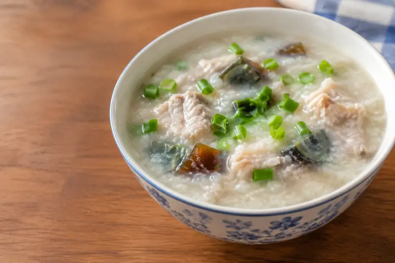

Staples主食
Short-grain rice短粒米(寿司米)
commonly stocked (not seen in this sample)Costco 常见（本次未见）
At Costco在 Costco
Typical pack常见规格: varies (Kirkland basmati 5 kg seen; short-grain varies)不定（见到 basmati 5 公斤；短粒米看货）
Price varies; check the warehouse or costco.ca.价格随时变化，请看仓库或 costco.ca。
Sample date取样日期 2026-11-16. Availability varies by warehouse and season; this is not a stock guarantee.有无因门店和季节而异，不是库存保证。
Store and portion储存与分装
Keep dry goods sealed in a cool, dry place for months; cooked rice keeps 3-4 days chilled.干货放密封容器、阴凉干燥处，米面可放数月；熟饭冷藏最多 3–4 天。
Freeze cooked rice in single servings and sprinkle a little water before microwaving.熟饭按一份装盒冷冻，微波加热前洒一点水。
Per 100 g (Canadian Nutrient File)每 100 克（加拿大营养素数据库）
Grains, rice, white, short-grain, dry · code 4476
358 kcal · protein蛋白 6.5 g · fat脂肪 0.52 g · carbs碳水 79.15 g · fibre纤维 2.8 g · sodium钠 1 mg
No priority allergen.无重点过敏原。
Recipes with this用到它的菜
Bibimbap石锅拌饭50 min分钟 · 2 servings份 · Korean韩 Bulgogi (Korean Marinated Beef)韩式烤牛肉 bulgogi（自制腌料）80 min分钟 · 4 servings份 · Korean韩Chicken Congee鸡肉粥63 min分钟 · 3 servings份 · Cantonese粤Teriyaki Chicken Bento照烧鸡腿便当37 min分钟 · 2 servings份 · Japanese日
Bulgogi (Korean Marinated Beef)韩式烤牛肉 bulgogi（自制腌料）80 min分钟 · 4 servings份 · Korean韩Chicken Congee鸡肉粥63 min分钟 · 3 servings份 · Cantonese粤Teriyaki Chicken Bento照烧鸡腿便当37 min分钟 · 2 servings份 · Japanese日 Japanese Beef Bowl (Gyudon)日式牛丼25 min分钟 · 3 servings份 · Japanese日
Japanese Beef Bowl (Gyudon)日式牛丼25 min分钟 · 3 servings份 · Japanese日 Japanese Chicken Curry日式咖喱鸡90 min分钟 · 4 servings份 · Japanese日Kimchi Fried Rice泡菜炒饭20 min分钟 · 2 servings份 · Korean韩
Japanese Chicken Curry日式咖喱鸡90 min分钟 · 4 servings份 · Japanese日Kimchi Fried Rice泡菜炒饭20 min分钟 · 2 servings份 · Korean韩 Kimchi and Tofu Stew (Kimchi-jjigae)泡菜豆腐汤（kimchi-jjigae）45 min分钟 · 2 servings份 · Korean韩Taiwanese Braised Pork Rice卤肉饭90 min分钟 · 4 servings份 · Fujian / Taiwanese闽台
Kimchi and Tofu Stew (Kimchi-jjigae)泡菜豆腐汤（kimchi-jjigae）45 min分钟 · 2 servings份 · Korean韩Taiwanese Braised Pork Rice卤肉饭90 min分钟 · 4 servings份 · Fujian / Taiwanese闽台 Oyakodon (Japanese Chicken and Egg Rice Bowl)亲子丼（日式鸡肉滑蛋盖饭）50 min分钟 · 2 servings份 · Japanese日Mushroom Risotto蘑菇烩饭45 min分钟 · 4 servings份 · Italian意Salmon Onigiri三文鱼饭团40 min分钟 · 2 servings份 · Japanese日Shanghai Vegetable Rice (Caifan)上海菜饭60 min分钟 · 3 servings份 · Jiangnan江浙
Oyakodon (Japanese Chicken and Egg Rice Bowl)亲子丼（日式鸡肉滑蛋盖饭）50 min分钟 · 2 servings份 · Japanese日Mushroom Risotto蘑菇烩饭45 min分钟 · 4 servings份 · Italian意Salmon Onigiri三文鱼饭团40 min分钟 · 2 servings份 · Japanese日Shanghai Vegetable Rice (Caifan)上海菜饭60 min分钟 · 3 servings份 · Jiangnan江浙 Teriyaki Salmon照烧三文鱼22 min分钟 · 2 servings份 · Japanese日
Teriyaki Salmon照烧三文鱼22 min分钟 · 2 servings份 · Japanese日
Bulgogi (Korean Marinated Beef)韩式烤牛肉 bulgogi（自制腌料）80 min分钟 · 4 servings份 · Korean韩Chicken Congee鸡肉粥63 min分钟 · 3 servings份 · Cantonese粤Teriyaki Chicken Bento照烧鸡腿便当37 min分钟 · 2 servings份 · Japanese日
Century Egg and Pork Congee皮蛋瘦肉粥80 min分钟 · 4 servings份 · Cantonese粤Japanese Beef Bowl (Gyudon)日式牛丼25 min分钟 · 3 servings份 · Japanese日Japanese Chicken Curry日式咖喱鸡90 min分钟 · 4 servings份 · Japanese日Kimchi Fried Rice泡菜炒饭20 min分钟 · 2 servings份 · Korean韩Kimchi and Tofu Stew (Kimchi-jjigae)泡菜豆腐汤（kimchi-jjigae）45 min分钟 · 2 servings份 · Korean韩Taiwanese Braised Pork Rice卤肉饭90 min分钟 · 4 servings份 · Fujian / Taiwanese闽台Oyakodon (Japanese Chicken and Egg Rice Bowl)亲子丼（日式鸡肉滑蛋盖饭）50 min分钟 · 2 servings份 · Japanese日Mushroom Risotto蘑菇烩饭45 min分钟 · 4 servings份 · Italian意Salmon Onigiri三文鱼饭团40 min分钟 · 2 servings份 · Japanese日Shanghai Vegetable Rice (Caifan)上海菜饭60 min分钟 · 3 servings份 · Jiangnan江浙Teriyaki Salmon照烧三文鱼22 min分钟 · 2 servings份 · Japanese日